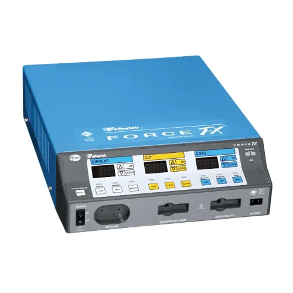

Plataforma de Gestión y Consulta del Electrobisturí
Valleylab Force FX · Medtronic
ElectroSafe es una plataforma web desarrollada para organizar, consultar y presentar información técnica relacionada con el electrobisturí como equipo biomédico.
La plataforma integra información sobre el equipo, normatividad, mantenimiento, riesgos, arquitectura, base de datos, casos de uso y documentación técnica.

Electrobisturí Valleylab Force FX utilizado como equipo de referencia para el proyecto ElectroSafe.
El Valleylab Force FX es un equipo de electrocirugía que utiliza energía eléctrica de alta frecuencia para generar efectos controlados sobre los tejidos.
Se utiliza principalmente para realizar corte y coagulación durante procedimientos quirúrgicos.
El equipo genera energía de alta frecuencia que se aplica al tejido mediante un electrodo. El efecto producido depende del modo de operación y de los parámetros seleccionados.
El equipo incorpora sistemas de monitoreo, alarmas y protecciones destinadas a detectar condiciones anormales durante su funcionamiento.
Requiere inspecciones y verificaciones periódicas de componentes, accesorios, conexiones, funcionamiento y sistemas de seguridad.
ElectroSafe permite organizar la información técnica del equipo, registrar mantenimientos, gestionar riesgos y conservar la trazabilidad de las intervenciones realizadas.
El equipo biomédico seleccionado es el electrobisturí Valleylab Force FX, utilizado como referencia para el análisis de gestión técnica y mantenimiento de equipos de electrocirugía.
La elección se fundamenta en la importancia de garantizar condiciones adecuadas de funcionamiento, seguridad y trazabilidad dentro del entorno hospitalario.
Una falla puede afectar la seguridad del paciente y la continuidad del procedimiento quirúrgico, por lo que resulta necesario mantener control sobre la información técnica, mantenimiento, riesgos y documentación.
Los diagramas representan gráficamente la estructura funcional y el proceso general de operación del electrobisturí.
Representa los principales componentes y etapas del funcionamiento del electrobisturí.
Representa el proceso general de operación del equipo.
ElectroSafe toma como referencia normas técnicas y disposiciones colombianas relacionadas con seguridad, gestión de riesgos y vigilancia de dispositivos médicos.
La plataforma se organiza en módulos que permiten estructurar las principales actividades relacionadas con la gestión técnica del equipo biomédico.
Organización de la información básica e identificación del equipo.
Centralización de información técnica, ubicación, estado y antecedentes.
Gestión de actividades preventivas y correctivas.
Registro de verificaciones y resultados.
Identificación de peligros, evaluación y controles.
Organización de manuales, normas e informes.
Consulta y presentación de información técnica.
Proyección de apoyo para consulta y organización de información técnica.
La base de datos propuesta permite estructurar la información relacionada con equipos biomédicos, mantenimientos, inspecciones, riesgos, documentos y usuarios.
Identificación, fabricante, modelo, número de serie, ubicación, estado y fecha de adquisición.
Tipo de mantenimiento, fecha, actividades, resultado y responsable.
Elementos revisados, resultados, observaciones y responsables.
Peligros, causas, consecuencias, nivel de riesgo y controles.
Los casos de uso describen las interacciones entre los usuarios y las funcionalidades principales de ElectroSafe.
ElectroSafe utiliza una arquitectura orientada a la separación de responsabilidades entre presentación, lógica de funcionamiento y gestión de información.
Interfaz desarrollada mediante HTML y CSS.
JavaScript controla interacciones y visualización de documentos.
Organización y consulta de documentos técnicos.
Evolución futura hacia una aplicación con servidor y base de datos persistente.
El proyecto analiza la importancia de la gestión técnica, mantenimiento, seguridad y trazabilidad de los equipos de electrocirugía.
La investigación sirve como fundamento para el desarrollo conceptual de ElectroSafe.
El mantenimiento permite conservar el electrobisturí en condiciones adecuadas de funcionamiento, seguridad y desempeño.
Incluye inspección visual, revisión de cables, conexiones, accesorios, limpieza y pruebas funcionales.
Comprende identificación de fallas, diagnóstico, reparación, verificación y registro.
Permite conservar el historial técnico y registrar las intervenciones realizadas.
La gestión de riesgos permite identificar peligros asociados al equipo, evaluar consecuencias y establecer medidas de control.
ElectroSafe se plantea como una herramienta para apoyar la gestión técnica del electrobisturí durante las actividades de consulta, inspección, mantenimiento y seguimiento.
Consulta de información básica y características del equipo.
Organización de verificaciones y resultados.
Registro y seguimiento de intervenciones técnicas.
Consulta organizada de manuales, normas y documentos.
Esta sección reúne las principales fuentes técnicas, normativas e institucionales utilizadas como fundamento para el desarrollo de ElectroSafe.
Las referencias completas, incluyendo los enlaces y URLs de las fuentes consultadas, se encuentran disponibles en el documento de bibliografía.